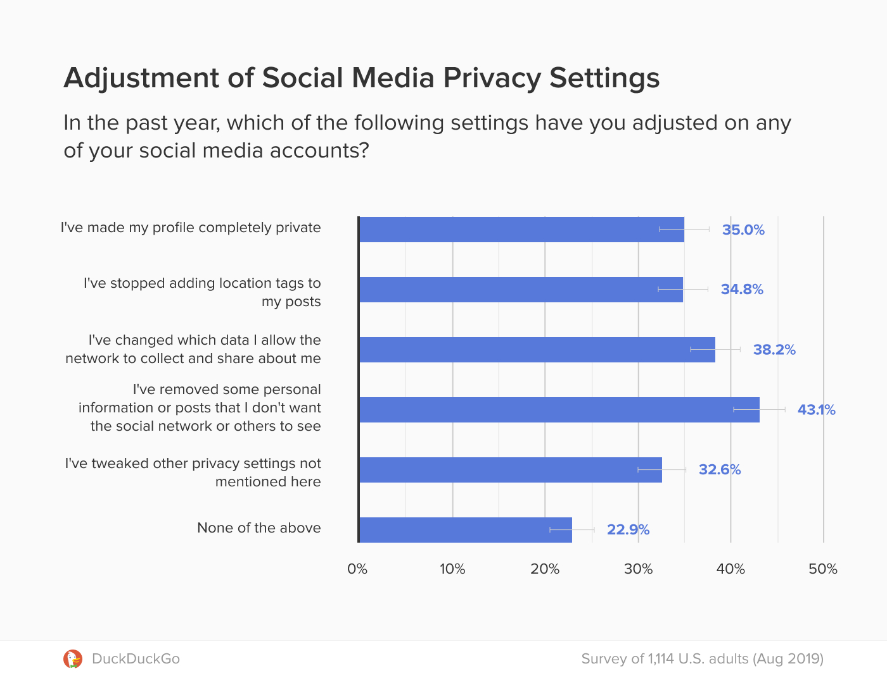

Day 18
In today's digital age, social media has become an integral part of our daily lives, but it also presents a risk to our personal privacy. While these platforms offer ways to connect and share, they also expose users to potential threats such as identity theft, data breaches, and online tracking. This challenge focuses on empowering individuals to take control of their social media privacy settings, minimizing these risks.
In 2022, a significant social media breach exposed sensitive user information, including private messages, emails, and photos. The breach affected millions of accounts worldwide, revealing how inadequate privacy settings can lead to serious vulnerabilities. This incident highlighted the need for stronger, proactive privacy measures, urging users to review and update their social media security settings regularly.
